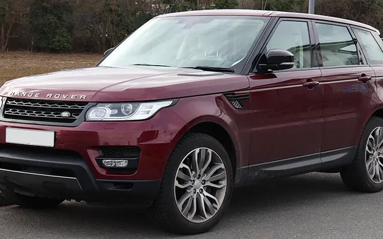

Par Motor › Precios por modelo › Land Rover Range Rover Sport
Precio de segunda mano · noviembre de 2026¿Cuánto vale un Land Rover Range Rover Sport de segunda mano?

Precio justo estimado de un Land Rover Range Rover Sport usado en España, año por año, con los kilómetros normales para su edad y en buen estado: de 11.700 € a 207.000 €. Para tasar el tuyo con sus kilómetros reales y su estado, usa el tasador gratis.
Precios del Land Rover Range Rover Sport por año
Range Rover Sport L320 (2005–2013)
Precio de nuevo: TDV6 2.7 190 CV, 60.000 € · Supercharged 4.2 390 CV, 85.000 € · TDV6 3.0 245 CV, 68.000 €
| Año | Km normales | TDV6 2.7 190 CV · Diésel | Supercharged 4.2 390 CV · Gasolina | TDV6 3.0 245 CV · Diésel |
|---|---|---|---|---|
| 2013 | 100.000 km | 22.100 € | 32.200 € | 25.000 € |
| 2012 | 100.000 km | 20.400 € | 29.800 € | 23.100 € |
| 2011 | 100.000 km | 18.800 € | 27.500 € | 21.300 € |
| 2010 | 100.000 km | 17.400 € | 25.400 € | 19.700 € |
| 2009 | 100.000 km | 16.100 € | 23.500 € | 18.200 € |
| 2008 | 100.000 km | 14.900 € | 21.700 € | 16.800 € |
| 2007 | 100.000 km | 13.700 € | 20.100 € | 15.600 € |
| 2006 | 100.000 km | 12.700 € | 18.500 € | 14.400 € |
| 2005 | 100.000 km | 11.700 € | 17.100 € | 13.300 € |
Range Rover Sport L494 (2013–2022)
Precio de nuevo: SDV6 3.0 292 CV, 80.000 € · Si4 2.0 300 CV, 75.000 € · P400e (enchufable) 404 CV, 90.000 €
| Año | Km normales | SDV6 3.0 292 CV · Diésel | Si4 2.0 300 CV · Gasolina | P400e (enchufable) 404 CV · Híbrido enchufable |
|---|---|---|---|---|
| 2022 | 90.000 km | 47.500 € | 50.500 € | 54.500 € |
| 2021 | 100.000 km | 43.500 € | 44.800 € | 48.300 € |
| 2020 | 100.000 km | 42.800 € | 38.800 € | 41.900 € |
| 2019 | 100.000 km | 42.000 € | 36.200 € | 39.100 € |
| 2018 | 100.000 km | 41.100 € | 35.100 € | 37.900 € |
| 2017 | 100.000 km | 40.100 € | 34.000 € | 36.700 € |
| 2016 | 100.000 km | 37.300 € | 32.800 € | 35.400 € |
| 2015 | 100.000 km | 34.500 € | 31.600 € | 34.100 € |
| 2014 | 100.000 km | 31.800 € | 30.400 € | 32.900 € |
| 2013 | 100.000 km | 29.400 € | 28.400 € | 30.700 € |
Range Rover Sport L461 (2022–hoy)
Precio de nuevo: D250 3.0 (microhíbrido) 249 CV, 98.000 € · P440e (enchufable) 440 CV, 110.000 € · SV 4.4 635 CV, 200.000 €
| Año | Km normales | D250 3.0 (microhíbrido) 249 CV · Diésel | P440e (enchufable) 440 CV · Híbrido enchufable | SV 4.4 635 CV · Gasolina |
|---|---|---|---|---|
| 2026 | 10.000 km | 95.600 € | 100.500 € | 207.000 € |
| 2025 | 30.000 km | 80.300 € | 84.400 € | 181.900 € |
| 2024 | 50.000 km | 74.200 € | 78.000 € | 172.100 € |
| 2023 | 70.000 km | 68.600 € | 72.100 € | 162.800 € |
| 2022 | 90.000 km | 58.200 € | 66.600 € | 154.100 € |
Kilómetros normales: 15.000 al año en gasolina, híbridos y eléctricos, y 20.000 en diésel, con un máximo de 100.000 km (por encima no tasamos: el precio depende demasiado del historial de cada coche). Cifras redondeadas a 100 €.
Preguntas frecuentes
¿Cuánto vale un Land Rover Range Rover Sport de segunda mano?
Según el año, la versión y los kilómetros, un Land Rover Range Rover Sport usado vale hoy de 11.700 € a 207.000 € en España. El más barato de nuestra tabla es un TDV6 2.7 de 2005 (11.700 €) y el más caro un SV 4.4 de 2026 (207.000 €). Son precios justos estimados entre particulares y profesionales, con los kilómetros normales para su edad y en buen estado.
¿Cuánto valor pierde un Land Rover Range Rover Sport al año?
Con unos años encima, un Land Rover Range Rover Sport pierde alrededor de un 10 % de su valor cada año (calculado sobre el D250 3.0 (microhíbrido) de la generación Range Rover Sport L461). Los primeros años la caída es mayor y a partir de los 70.000 km se acelera.
¿Qué motorizaciones tiene el Land Rover Range Rover Sport?
En nuestra base de datos hay versiones diésel, gasolina y híbrido enchufable, en 3 generaciónes: Range Rover Sport L320, Range Rover Sport L494 y Range Rover Sport L461.
¿Cómo sé si me piden demasiado por un Land Rover Range Rover Sport?
Abre el tasador de Par Motor, elige el Land Rover Range Rover Sport, el año y los kilómetros reales, y escribe lo que te piden. Te diremos si está por debajo del precio justo (chollo) o por encima (caro). Es gratis y no pide registro ni matrícula.
Otros Land Rover
Compara su coste real
El precio de compra es solo una parte. Mira cuánto te costaría al mes con combustible, seguro, neumáticos, mantenimiento y lo que pierde de valor.
Abrir el comparador →